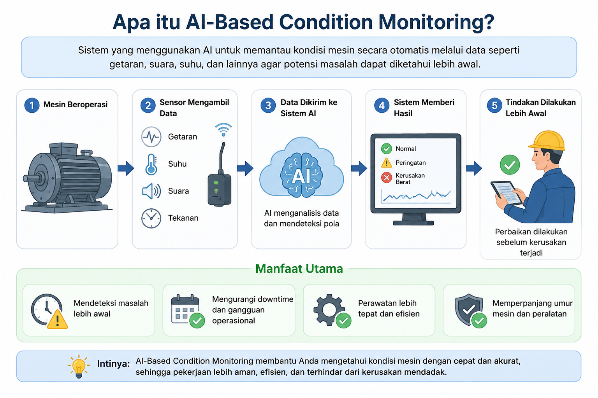

Penilaian singkat ini membantu Anda mengenali tingkat kesiapan pribadi dalam mengadopsi teknologi baru di tempat kerja, khususnya sistem Condition Monitoring berbasis kecerdasan buatan di pabrik metal stamping. Silakan isi identitas berikut (opsional), lalu lanjutkan.
Condition Monitoring (pemantauan kondisi) adalah cara memantau keadaan mesin secara terus-menerus menggunakan sensor, misalnya sensor getaran (vibrasi), suhu (temperatur), dan tekanan. Sensor membaca “tanda-tanda” dari mesin sehingga gejala kerusakan bisa dikenali lebih awal, jauh sebelum berubah menjadi kerusakan besar.
Dengan bantuan kecerdasan buatan (AI), data dari sensor tersebut dianalisis untuk memprediksi potensi kegagalan sebelum benar-benar terjadi. Hasilnya, perawatan dapat dijadwalkan pada waktu yang tepat dan downtime (mesin berhenti mendadak) yang tidak terencana dapat dikurangi.
Yang terpenting, teknologi ini dirancang untuk mendukung dan meringankan pekerjaan teknisi serta operator, bukan untuk menggantikan peran Anda. Keputusan akhir tetap berada di tangan manusia; sistem hanya memberi peringatan dini dan rekomendasi.

Mohon jawab semua pernyataan terlebih dahulu. Pernyataan yang belum dijawab ditandai dengan warna merah.
Grafik menampilkan rata-rata skor asli (skala 1–5) untuk tiap dimensi. Nilai Discomfort dan Insecurity ditampilkan apa adanya (belum dibalik).
–
Sumbu mendatar menunjukkan tingkat hambatan psikologis (semakin ke kanan = hambatan semakin rendah). Sumbu tegak menunjukkan motivasi terhadap teknologi (semakin ke atas = motivasi semakin tinggi).
Garis putus-putus adalah ambang baseline penelitian (Inhibitor-reversed = 3,125 dan Motivator = 3,750). Titik menandai posisi Anda.
Anda dapat menyimpan hasil ini dengan mengambil tangkapan layar (screenshot).
Klasifikasi persona ini menggunakan ambang baseline yang diperoleh dari penelitian di PT Adyawinsa Stamping Industries (45 responden). Hasil bersifat indikatif sebagai dasar pengembangan sumber daya manusia dan bukan merupakan penilaian mutlak terhadap individu.